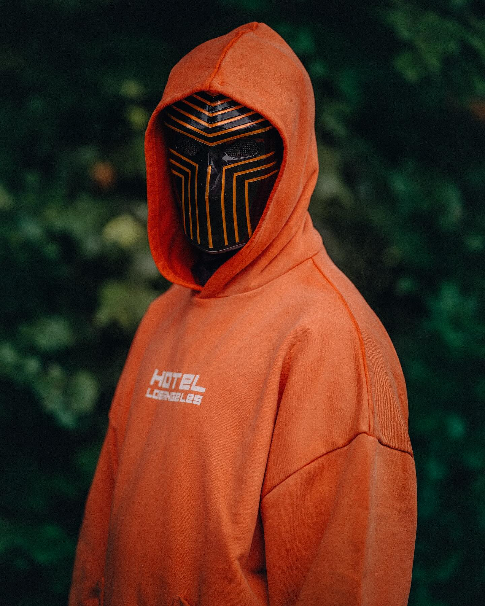
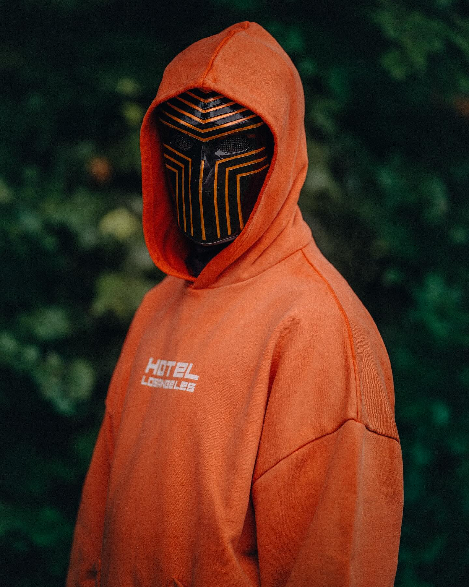

Early life
Walker was born on August 24, 1997, in Northampton, England, to a Scottish-British father and a Norwegian mother. Walker moved to Fana, Bergen, Norway, with his two siblings when he was two years old. He was originally most interested in computer games, graphic design, and programming, and spent his childhood playing with Nintendo hardware and home consoles such as the PlayStation and Nintendo GameCube.
In 2010, he went on to Danielsen Middle School, a private Christian middle school in the center of Bergen. During middle school, he started making music. Originally, he loved listening to music, but knew very little about it. As a result, he started learning music and production by watching YouTube tutorials. In 2013, he went on to Danielsen High School. During high school, he often worked in his grandparents' garden, but wondered if he could make music into a career. After graduating from high school, he planned to either serve his country in the military or work at a nearby grocery store.


Artistic image
He was originally called "DJ Walkzz" and was part of several production collectives before becoming "Walkzz". The current logo consists of the initials "A" and "W" of Walker's real name, and was designed by Walker himself in 2013. To project his image, he uses a hoodie and face mask similar to concept. Walker said: "At first we were thinking about ideas like how can we promote Alan Walker as an artist, but then we started creating symbols that anyone could do, and anyone with a hoodie and a face mask could do it. You can become a 'Walker' right away, and we are all equal," he explained his concept. In an interview with NRK, when asked why he used a mask, he said, "To maintain the image they gave me. Basically, I'm focused on anonymity, so no one knows. But I can join Alan Walker and show that masks can look good on anyone."
Influences
Walker is inspired by Italian DJ David Whistle, who he said in an interview was "the first person to inspire me." He is also inspired by fellow Norwegian producer K-391. In an interview with the American online magazine The Knockturnal, Walker said, "My producer idol is K-391. He was a big inspiration and helped me create my sound." When making his debut single "Fade", Walker was influenced by the sound of the song "Nova" by Dutch music producer Ahrix. In an interview, he said, "The melody and the way the song progresses is very unique, which later inspired me to make "Fade". The classical aspects of Walker's songs were influenced by film composers such as Hans Zimmer and Steve Jablonsky.
David Whistle, K-391, Ahrix, Hans Zimmer (from left to right)
 
